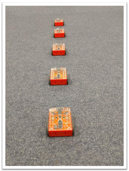

En esta actividad, los estudiantes exploran más del grupo de bloques 'esperar hasta' y crean programas que dependen de la entrada del usuario.
Esta actividad utiliza bloques de aplausos "esperar hasta" para permitir a los estudiantes crear un programa
utilizando el sensor de sonido incorporado de Edison.
Los estudiantes crearán un programa que requiere la participación del usuario, en forma de aplausos,
para progresar.
• Puede ser útil revisar los componentes de Edison, enfatizando la ubicación del sensor de sonido de Edison antes de que los estudiantes comiencen la actividad.
• Los robots pueden tener dificultades para detectar sonidos cuando hay un alto nivel de ruido de fondo.
Hacer que los estudiantes toquen con un dedo cerca del sensor de sonido de su Edison creará el mismo
efecto que aplaudir.
• Recuerde a los estudiantes que Edison lee EdBlocks bloque a bloque.
Por lo tanto, cuando un bloque le dice a Edison que 'espere hasta' una condición, Edison esperará hasta
que se cumpla esa condición antes de pasar al siguiente bloque del programa.
1. Presente la idea de declaraciones 'SI'. Haga la pregunta 'si no se detecta ningún aplauso, ¿qué hará Edison?'
Discuta cómo las declaraciones 'SI' podrían ayudar en el diseño de programas.
2. Juega dominó con Edison. Programe varios robots Edison con un programa que los haga avanzar una vez que se detecte un aplauso.
3. Ponga en cola los robots Edison uno detrás del siguiente sin más espacio entre ellos del que Edison cubrirá
durante su bloque de 'avance'.
Toque el primer Edison y observe cómo causa un efecto dominó cuando choca con el Edison que tiene enfrente.
Vea el programa de ejemplo y las imágenes de configuración para ver ejemplos.

Tenga en cuenta: este programa es un ejemplo de respuesta. Los resultados de los estudiantes dependerán de sus experiencias.